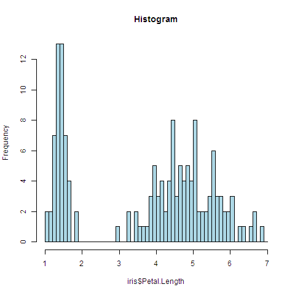
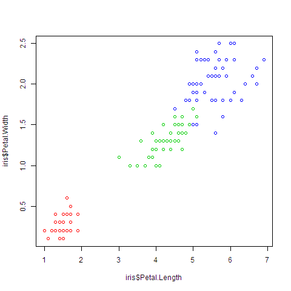

Table of Contents
-
1. R reference card
- 1.1. Documentation
- 1.2. Coding style
- 1.3. Emacs Speaks Statistics (ESS) key bindings
- 1.4. 0. Overview of R
- 1.5. 1. Getting started and getting help
- 1.6. 2. Some basics
- 1.7. 3. Navigating the software
-
1.8. 5. Data structures
- Basic (“atomic”) vector types
- Vectors
- Matrices
- Arrays
- Lists
- Factors
- Data frames
- Vectorized operations (recycling rule)
- Selecting list elements or data frame columns by position (subsetting)
- Selecting list elements or data frame columns by name (subsetting)
- Selecting data frame columns by position (subsetting)
- Flatten a list into a vector
- 1.9. Control structures
- 1.10. Writing functions
-
1.11. 4. Data Input and output
- Getting the current working directory
- Creating, opening and closing connections
- Make your data available
- Reading tabular data files
- Writing tabular data files
- Reading from CSV files
- Reading from Excel files
- Reading from Google spreadsheets
- Reading files from the Internet
- Reading files with a complex structure
- Reading from SQL Server databases
- Saving and transporting objects
- Further resources
- 1.12. 12. Useful tricks
- 1.13. 9. General statistics
-
1.14. 6. Data transformations
- Fixing variable names
- Creating new variables
- Change the class of many columns from factor to character (or numeric)
- Removing list elements using a condition
- Selecting rows and columns more easily
- Removing NA from a list
- Removing rows that contain NAs from a data frame
- Removing columns that contain NAs from a data frame
- Removing columns by name
- Merging data frames by common column
- Convert a list of data frames into one data frame
- Converting
- Applying a function to each list element
- Splitting a vector into groups
- Applying a function to every row/column
- Applying a function to groups of data
- Applying a function to parallel vectors or lists
- Checking on and removing inconsistent values
- 1.15. 7. Strings (and dates)
- 1.16. 8. Probability
- 1.17. 10. Graphics
- 1.18. 11. Linear regression and ANOVA
- 1.19. Debugging
- 1.20. Assert
- 1.21. Contributing
- 1.22. License
1 R reference card


Welcome to R reference card. It contains the reference documentation that describes how to perform data analysis using R.
1.1 Documentation
- R Reference Card
- Search the documentation of R packages and R functions
- Quick-R – An excellent quick reference
- Cookbook for R: http://www.cookbook-r.com/
1.2 Coding style
- R Internals manual, section 8. “R Coding Standards”
- R coding style guide
- R Coding Conventions
-
variable.name(preferred,variableNameaccepted)
FunctionName
kConstantNamePlace spaces around all binary operators (=, +, -, <-, etc.).
Exception: Spaces around =’s are optional when passing parameters in a function call.Do not place a space before a comma, but always place one after a comma.
1.3 Emacs Speaks Statistics (ESS) key bindings
Most of the shortcuts are actually mnemonic and hierarchical:
C-c C-dfordoc-map,C-c C-eforextra-map,C-c C-tfordev-mapwhich includes mostly [t]racebug.
References
Interacting with the ESS process
Command History
M-r-
Search for a regular expression backward in the command history (using Isearch).
This is worth a wealth…
Hot keys for common commands
ESS handling of multiple processes is pretty unique.
C-c C-s- ess-switch-process
C-c C-q-
Issue a
q()command to the inferior process, and kill all the temporary buffers.Press
C-c C-q+M-x Rto quickly restart the R console (without restarting the editor).
Other commands provided by inferior-ESS
C-c C-z- Switch to the (most recent) script buffer.
Sending code to the iESS process
Primary process interaction commands:
C-M-x- Send the current region or function or paragraph to the ESS process.
C-c C-c-
Send the current region or function or paragraph (defined as continuous set of lines surrounded by a blank line at top and bottom) to the ESS process and step to the next line of code, skipping comments.
If you group R statements into tasks, send the whole task to the R process without selecting anything.
C-RET- Send the current region or line to the ESS process and step to the next line of code.
Other evaluation commands:
C-c C-b- Send the current buffer to the ESS process.
C-c C-r- Send the current region to the ESS process.
C-c C-f- Send the current function to the ESS process.
C-c C-p- Send the current paragraph to the ESS process and step to the next line of code.
C-c C-n- Send the current line to the ESS process and step to the next line of code.
Manipulating saved transcript files
C-u C-u C-y-
Paste cleaned commands (from a region copied with
M-w) into a new R buffer or at the prompt: remove all prompts and command output, leaving only the commands.This is handy if you paste code from iESS, mail buffers or PDF documents.
Editing objects and functions
Creating or modifying objects
In-session function editing.
C-c C-e C-d- Edit the code of an object (such as the
function
lm). Emacs opens a buffer called<user-login-name>.<object>.R.
C-c C-e d and C-c C-e C-d can open
file versions of R functions. C-c C-e l sends same
back.
Other nice tools ( probably not available in other editors):
C-c C-e iess-install-libraryC-c C-e less-load-libraryC-c C-e C-wess-execute-screen-options
Loading source files into the ESS process
C-c C-l-
(Re-)Load a file into the ESS process using
source().This usually works better than
C-c C-cfor reporting parsing errors with a trace.
Commands for motion, completion and more
C-c C-z- Switch to the associated iESS process buffer.
-
Tags
Tables
C-c C-e C-t-
Build tag tables.
After building tags, use
M-.to jump to function and objects definitions.
Probably the most used command of mine is imenu-anywhere.
(global-set-key (kbd “C-.”) ‘imenu-anywhere)
and you will be able to navigate to the definition of the symbol at point as long as the other file is open. This is like tag navigation but more convenient IMO. Both ido and helm interfaces are available.
Reading help files
Help at your fingertips:
C-c C-d C-d(orC-c C-v)-
Display R help on an object (which has an help file) in Emacs, for example for the function call you’re currently writing.
Same as typing
?<object>in the iESS buffer.Then Press
lto run example in R help page, line by line. C-c C-d C-a- Create an Apropos buffer with a linked list of apropos topics.
C-c C-d i- Display index of package.
C-c C-d C-v- Display vignettes.
C-c C-d C-e-
Describe object at point.
Repeat
C-eto cycle through the list of commands:str(),htsummary(),summary().
C-c C-d o- Create an Demos buffer with a linked list of available demos.
C-c C-d C-w- Search the web for documentation.
Completion
Integration with auto-complete package
Auto-completion of objects and arguments: http://www.emacswiki.org/emacs/ESSAuto-complete.
Developing with ESS
ESS tracebug
Tracebug highlighting of errors.
-
Breakpoints
C-c C-t b- Set breakpoint (repeat to cycle through the breakpoint
types:
browserandrecover). C-c C-t B- Set conditional breakpoint.
C-c C-t l- Set logger breakpoint.
C-c C-t o- Toggle the active/commented state of the breakpoint.
C-c C-t k- Kill breakpoint.
C-c C-t K- Kill all breakpoints.
C-c C-t n- Go to next breakpoint.
C-c C-t p- Go to previous breakpoint.
(
C-prefixed equivalents are also defined) -
Debugging
C-c C-t `(also onC-c `)- Show Traceback buffer (display source locations).
C-c C-t ~(also onC-c ~)- Show call stack (display source locations).
C-c C-t e-
Toggle on-error action (repeat to cycle):
NONE(“-” in the mode line)RECOVER(“r” in the mode line)TRACEBACK(“t” in the mode line)
C-c C-t d- Flag for debugging.
C-c C-t u- Unflag for debugging.
C-c C-t w- Use
ess-watchwhile debugging to see variables change at each step, or even just at the prompt.
(
C-prefixed equivalents are also defined) -
Interactive
debugging
M-C- Continue
C-M-S-c- Continue multi
M-N- Next step
C-M-S-n- Next step multi
M-U- Up frame
M-Q- Quit debugging
-
Navigation to
errors
source(file="missing-file.R") list(a=22, b=343) ^ protocol <- NULL paste("{**", }) stop("Test error")
The arrow in the left fringe of the iESS buffer is an indicator of the beginning of the last evaluation. It helps you to quickly pinpoint the first error (often the most relevant one) in the
*R*buffer by searching for this arrow.Error navigation in the
*R*buffer is limited to the region between this arrow and the end of the buffer.M-g n(M-x next-error)- Next error.
M-g p(M-x previous-error)- Previous error.
- Tracebug
visual debugger
ESS developer
C-c C-t C-a- Add a package to your development list.
C-c C-t C-t- Toggle developer mode on and off.
C-c C-t l- ess-developer-load-package (this one is in ESS dev as yet).
Other ESS features and tools
ElDoc
ElDoc support: automatic display of function arguments in the echo area.
Other Emacs features and tools
I would add C-s and C-r to search in the help buffer and M-\ to indent
Also the ability to mix in other, general purpose Emacs tools:
paredit-mode to give me good shortcuts to navigate around and manipulate parentheses and braces,
git-gutter-mode to keep tabs on lines I’ve changed in a file.
M-/ to complete long words the second time I type them.
1.4 0. Overview of R
1.5 1. Getting started and getting help
?function ?dataset package ? lattice library(help=lattice)
args(function)- Look at the arguments of a FUNCTION.
Other ways:
1.6 2. Some basics
Print something
print(object)- Explicitly print out an object.
cat()- Concatenate together a set of strings and prints out the concatenated string (to a file or to the console).
Setting variables
<-- Assign a value to a variable.
Listing variables
ls(),ls.str()- Show objects in my workspace.
Deleting variables
rm()-
Remove objects from your workspace.
rm(list=ls()) # remove everything from the workspace
Computing basic statistics
mean()- Take the mean.
median()- Take the median.
cor()- Correlation function.
Creating sequences
n:m- Create an sequence of integers from
ntom(n<morn>m). seq(from, to, len)- Create a sequence of
lenequally spaced fractional numbers. rep(x, times)- Create a series of repeated values.
Operators
==- Compare.
%in%- Test membership.
1.7 3. Navigating the software
library(package)-
Load PACKAGE.
library(datasets) airquality
data(dataset)- Load DATASET.
source("file.R")- Evaluate R code file.
Running a batch script
You may write a script containing R code:
#!/usr/bin/env Rscript argv <- commandArgs(TRUE) x <- as.numeric(argv[1]) # etc. png("graph.png", 500, 500) plot(graph) graphics.off()
1.8 5. Data structures
What is data?
- Population
- Set of items.
- Variable
-
Measurement or characteristic.
- Qualitative
- Can be defined by a label and have discrete values.
- Quantitative
- Measured on a numerical scale.
Basic (“atomic”) vector types
| Class | Example |
|---|---|
logical |
TRUE / FALSE |
integer |
1L (with explicit
L suffix) |
numeric |
0.5 or 1
(real numbers) |
complex |
1+0i |
character |
“hello” (= lowest class) |
class()-
Show the class of the object.
Note that an object can belong to more than one class.
unclass(vector)- Strip out the class (see factors).
Vectors
Vectors are sets of elements of the same class.
When objects of different classes are mixed in a vector, coercion occurs behind the scene so that every element is of the same class (the “lowest common denominator” class).
c()- Create a vector of objects (that is, concatenate or combine things together).
vector(class, length)- Create an empty vector.
names()-
Show or give a name to each element of a vector.
names(df) <- tolower(names(df))
length()
Matrices
Matrices are vectors with 2 dimensions attached to them
(see dimension attribute).
They are constructed column-wise (vector inserted by column).
They can be created from vectors by adding a dimension attribute:
v <- 1:10 dim(v) <- c(2, 5) print(v)
| 1 | 3 | 5 | 7 | 9 |
| 2 | 4 | 6 | 8 | 10 |
They can be created by column-binding or row-binding.
matrix(nrow=x, ncol=y)- Create an empty matrix.
cbind()- Column-bind (if the row order matches; otherwise, use
merge). rbind()- Row-bind.
Arrays
Arrays are n-dimensional matrices.
array()- Create an array.
Lists
Lists are vectors of objects of possibly different classes.
The indexes of the elements of a list have double brackets around them.
list()- Construct a list.
Factors
Factors are qualitative variables used to represent categorical data, to store self-describing codes for labels (such as “male” and “female”, or “low”, “medium” and “high”).
Unordered or ordered.
factor(character vector)- Create a factor variable (with levels by alphabetical order).
levels(x)- Return the value of the levels.
Data frames
Data frames are used to store tabular data where each column can be of a different class: special type of list (of columns) where every element has the same length.
- Row = observation, column = variable
- Special attribute
row.names(every row has a name, or defaults to a sequence of integers) - Most often created by calling
read.table()orread.csv() -
Create a data frame.
df <- data.frame(cbind(v1, v2)) # create a dataframe of two vectors
- Convert a data frame to a numeric matrix (forced coercion!).
- Tell the names of each column included in the data frame.
Vectorized operations (recycling rule)
Avoid writing loops (code is a lot simpler):
x + y # element-wise addition
Similar for the matrices:
x * y # element-wise multiplication x %*% y # true matrix multiplication
Selecting list elements or data frame columns by position (subsetting)
[-
Return an object of the same class as the original: a list of elements (or a data frame built from multiple columns). The data type is preserved.
Extract multiple elements of a list:
x[c(1, 3)]
Remove the first column:
df[, -1]
[[-
Extract a single element of a list (or a single column of a data frame) by index.
Can be used with computed indices.
Can extract nested elements of a list:
x[[1]][[3]] # same as: x[[c(1, 3)]] # third element of the first element
Partial matching allowed at the command-line:
x[["a", exact=FALSE]] # instead of: x[["aardvark"]]
Selecting list elements or data frame columns by name (subsetting)
$-
Extract a single element of a list (or a single column of a data frame) by name: you don’t have to remember where the element is in the list.
x$bar # same as x[["bar"]]
Can only be used with literal names.
Partial matching allowed at the command-line:
x$a # instead of: x$aardvark
The only (typical data) class that uses $ as a
accessor is list (from which dataframes inherit).
Hence, you can’t use $ notation with
matrices. You need to use x["ratio"] or
x[["ratio"]].
Selecting data frame columns by position (subsetting)
Matrices can be subsetted with (row, col) type
indices.
Indices can also be missing:
x[i, ]- Row i.
x[, j]- Column j.
By default,
- a single element is retrieved as a vector of length 1 rather than a 1x1 matrix.
- a single column or a single row is retrieved as a vector, not as a matrix.
This can be turned off by setting drop=FALSE (don’t
drop the dimension).
Flatten a list into a vector
unlist- Flatten the list into a vector (for functions which work on vectors but not on lists.)
1.9 Control structures
Control structures mentioned here are primarily useful for writing
programs. For command-line interactive work, the *apply
functions are more useful.
Conditional statements
if (condition) { ## do something } else { ## do something else }
Here, the entire if/else construct is all about
assigning a value to y:
y <- if(x > 3) { # x must be a scalar here, not a vector 10 } else { 0 }
Loops
Loop over the elements:
for (x in xs) { # take elements from the vector ## do something }
Loop over the numeric indices:
for (i in seq_along(xs)) { # successive values from a sequence or ## do something # vector }
seq_along(vector)- Create an integer sequence that’s equal to the length of the input vector.
seq_len(integer)- Create an integer sequence that’s as long as the integer in input.
nrow(dataset)- Tell the number of rows.
ncol(dataset)- Tell the number of columns.
Loop over the names:
for (nm in names(xs)) { ## do something }
while (z >= 3 && z <= 10) { # conditions are always evaluated from # left to right ## do something }
Initiate an infinite loop:
repeat { ## do something if(<condition>) { break # only way to exit a repeat loop } }
break- Break the iteration of a loop.
next- Skip an iteration of a loop.
return- Exit an entire function and return a given value.
Better to use a for loop with an hard limit on the
number of iterations that it’s allowed to run.
1.10 Writing functions
-
Functions are R objects of class
functionMyFunction <- function(arguments) { # Function documentation. ## do something }
- Functions can be passed as arguments to other functions
- Functions can be nested, so that you can define a function inside of another function (implications: see lexical scoping)
- You can omit
returnif you want to return the last value produced in function. - 3 types of…
- formal argument
- local variable
- free variable
-
R pass arguments by copy, not by reference.
To add a column in the data frame within a function, return new values either by
return(data_frame_I_work_with)orreturn(column_I_made).
Arguments
- Named arguments can potentially have default values (useful: not every function call makes use of all the formal arguments; some can be missing)
- The formal arguments are the arguments included in the function definition
formals()returns a list of all the formal arguments of a function- Arguments can be matched positionally or by
name
- When an argument is matched by name, it is “taken out” of the argument list and the remaining unnamed arguments are matched in the order that they are listed in the function definition
- Named arguments help when:
- you want to use the defaults for everything except for an argument near the end of the list
- you can’t remember the position of the argument
- Function arguments can also be partially matched
- Check for an exact match
- Check for a partial match
- Check for a positional match
- When defining a function, you can also set an argument value
to
NULL(there is no value there) - Arguments to functions are evaluated lazily (only when needed to be evaluated
- The
...argument indicates a variable number of arguments- Used when extending a function and you don’t want to copy the entire argument list of the original function
- Used by generic functions (such as
mean) so that extra arguments can be passed to methods - Used when the number of arguments cannot be known in
advance (see
pastefunction) - Any argument that appears after the
...must be named explicitly and cannot be partially matched
Scoping rules for R
- R searches through the search list (a series of
environments, an environment being a collection of symbol/value pairs) to bind the appropriate value to a symbol:- Search the global environment
.GlobalEnv(always the first) -
Search the namespaces of each of the packages on the search list
search() # find the search list
- Search the
basepackage (always the last element)
- Search the global environment
- Last loaded package gets put in position 2 of the search list and everything else gets shifted
- Separate namespaces for functions and non-function objects
- R uses lexical (or static) scoping
(instead of dynamic scoping): the value of free
variables are searched for in the environment in which the
function was defined (until the empty
environment, after the
basepackage)- With dynamic scoping, the value of free variables is looked up in the environment from which the function was called (calling environment = parent frame) – see slide 24 of “Scoping Rules for R” for a comparative example
- Other languages that support lexical scoping: Scheme, Perl, Python, Common Lisp
- Consequences: all objects must be stored in memory, and all functions must carry a pointer to their respective defining environment
- Every environment has one parent environment (next thing down on the search list); it is possible for an environment to have mulitple “children”
- A function + an environment = a (function) closure
-
In R (unlike C), you can have functions defined inside other functions – in this case, the environment in which a function is defined is the body of another function!
make.power <- function(n) { # "constructor" function pow <- function(x) { x^n # n is a free variable (not defined # inside pow) } pow # return function as return value }
This function returns another function as its value
cube <- make.power(3) square <- make.power(2)
- Functions:
environment(f)parent.env(environment)- Next thing down on the search list
ls(environment)- List all the variables in the environment
get(object, environment)- Get the value of an object inside an environment
1.11 4. Data Input and output
Types of files:
- Tab-delimited
- CSV
- Excel
- JSON
- HTML/XML
- Database
Getting the current working directory
getwd()- Figure out what your working directory is.
Creating, opening and closing connections
file()-
descriptionis the name of the fileopenis a code (read-only, write, append)
con <- file("./data/cameras.csv", "r") cameraData <- read.csv(con) close(con)
Make your data available
Data can be imported directly into R with the
textConnection function:
con <- textConnection(" index email A abc@example.com B def@example.com C def@example.com D ghi@example.com E abc@example.com F def@example.com") df <- read.table(con, header = TRUE)
Reading tabular data files
read.table(file)-
Read tabular data file, create data frame.
Important arguments:
fileheadersep(defaults to the space)quotecolClasses(class of each column, also used to skip columns)nrowsskip(number of lines to skip from the beginning)comment.charstringsAsFactors(defaults toTRUE)textto feed your data text representation directly toread.table
data <- read.table("./data/file.txt", header=T, sep="\t", quote="")
For large datasets:
- Set
comment.char= "" if there are no comments in your file. -
Use the
colClassesargument.Quick and dirty way to figure out the classes of each column (if there aren’t any classes that you want to change from their defaults): read in the first rows, determine the classes from that, and then import the rest of the file.
tabSample <- read.table("datatable.txt", nrows=100) classes <- sapply(tabSample, class) tabAll <- read.table("datatanble.txt", colClasses=classes) # save time on importing data
- Set
nrowshelps with memory usage.
R equivalent of Linux cut (to read only certain
columns from a file):
whichCols <- rep("NULL", 28) # assuming 28 colums whichCols[c(1, 5, 28)] <- NA df <- read.table(file, colClasses=whichCols)
To call some shell script to do the column extraction and then
using read.table on its output:
df <- read.table(pipe("cut -f1,5,28 myFile.txt"))
Writing tabular data files
write.table()- Write data.
Reading from CSV files
read.csv(file)-
Read data from CSV file, create data frame.
header(defaults toTRUE)separator(defaults to comma)na.strings(“NULL”, defaults to “NA”)
data <- read.csv("./data/file.csv") read.csv(file.choose()) # pick a file
It calls
read.tablewith some default values. To look at them, just look at the code ofread.csvby typingread.csvand hitting <enter> at your R command line). read.csv2(file)-
Read data from CSV file, create data frame.
header(defaults toTRUE)separator(defaults to;)
Reading from Excel files
read.xlsx(),read.xlsx2()- Read Excel files.
You can also read from Excel spreadsheets using RODBC and
sqlQuery.
Reading from Google spreadsheets
require(RCurl) myCsv <- getURL("https://docs.google.com/spreadsheet/pub?...&output=csv") read.csv(textConnection(myCsv))
Reading files from the Internet
download.file()-
Download a file from the Internet.
Be sure to record when you downloaded it.
fileUrl <- "http://..." download.file(fileUrl, destfile="./data/file.csv", method="curl")
Reading files with a complex structure
readLines()-
Read lines of text from a connection.
Connections can be made to:
file(most common)gzfile, file compressed withgzipbzfile, file compressed withbzip2url
Remember to close connections.
con <- url("http://scholar.google.com/citations") htmlCode <- readLines(con) close(con) # get data off webpages html3 <- htmlTreeParse("...") # find value of title tag xpathSApply(html3, "//title", xmlValue) # access parts of the table xpathSApply(html3, "//td[@id='col-citedby']", xmlValue)
Reading from SQL Server databases
## install.packages("RODBC") library(RODBC) ## channel <- odbcConnect("DSN", uid="username", pwd="password") ## channel <- odbcDriverConnect("DSN=DSN;UID=username;PWD=password") ## channel <- odbcDriverConnect("driver={SQL Server};server=hostname;database=dbname;trusted_connection=true") channel <- odbcDriverConnect("driver={SQL Server};server=hostname;database=dbname;uid=username;pwd=password") # Check that connection is working. if (channel == -1L) { stop("Error establishing an ODBC connection.") } else odbcGetInfo(channel) sql <- "SELECT * FROM table" sql <- gsub("\n", " ", sql) # optional df <- sqlQuery(channel, sql) if (is.character(df)) { # SQL error (no data frame returned) stop(paste(df, collapse="\n")) } else if (nrow(df) == 0) { cat("No data\n") } else print(head(df)) odbcClose(channel)
- Check the class of each column with
lapply(df, class)! - Display the factor columns with
df[sapply(df, is.factor)]!
if (transaction) sqlQuery(channel, 'START TRANSACTION') if (success & transaction) { sqlQuery(channel, 'COMMIT') } else if (transaction){ sqlQuery(channel, 'ROLLBACK') }
There is a convergence movement to the DBI package.
rsqlserver is part of it, but it is less mature than RODBC (though it’s still high quality).
Saving and transporting objects
Textual formats (potentially recoverable in case of corruption).
dput()- Deparse a single R object.
dump()- Can be used on multiple R objects.
Further resources
Packages:
httr- For working with HTTP connections.
RMySQL- For interfacing with mySQL.
bigmemory- For handling data larger than RAM.
foreign- For getting data into R from SAS, SPSS, Octave, etc.
1.12 12. Useful tricks
Peeking at your data
head()- Look at the first 6 rows.
tail()- Look at the last 6 rows.
str()-
Compactly display the internal structure (classes, etc.) of an object.
Alternative to
summary().When applied to functions, show the arguments.
str(.Platform) # what is the operating system
attributes()- Access (set or modify) the (list of) attributes of an object.
1.13 9. General statistics
Summarizing your data
range()-
Give the min and the max (vector 2 elements) of the observations (vector of numbers).
Useful to give the extremes of a range to the
xlimandylimarguments of an axis.yrange <- range(c(x1, x2, x3))
summary()-
Produce a summary of the object.
Display the number of NA values in each column.
Tabulating factors
-
table(f) -
Count the number of observations in each level (only works on factors). Give a frequency of how many levels there are (sorted by level).
unique(df$f) length(unique(df$f)) # how many unique values table(df$f, useNA="ifany") # number of times each unique value # appears (show missing values as well)
Sort by decreasing count:
sort(table(df$f, useNA="ifany"), decreasing=TRUE)
Convert it into a data frame if you’re more comfortable working with that:
as.data.frame(table(df$f, useNA="ifany"))
Relative frequencies:
tbl <- table(df$f, useNA="ifany") tbl / sum(tbl)
Use the
cutfunction to calculate tables with numeric values.f <- cut(df$x, breaks=30) # use `labels' to give nice names table(f, useNA="ifany")
Draw a useful graphical summary (to describe proportions):
pie(table(df$x)) pie(sort(table(df$x))) # bigger and bigger
table(f1, f2)-
Produce a contingency table (cross-tabulation).
table(df$f1, df$f2) # look at the relationship between f1 # and f2
ftable(f)- 3-dimensional contingency table.
Testing categorical variables for independence
summary(table(f1, f2))
Conventionally, a p-value of less than 0.05 indicates that the variables are likely not independent (there is some connection between the variables).
Calculating quantiles (and quartiles) of a dataset
quantile(vec, na.rm=TRUE)
1.14 6. Data transformations
(Partial list of) munging operations (= key process)
- These steps must be recorded in their own R script
- 90% of your effort will often be spent here
Processed (tidy) data:
- Each variable forms a column.
- Each observation forms a row.
- Each table / file stores data about one kind of observation.
Fixing variable names
tolower(names(df))
splitNames <- strsplit(names(df), "\\.") # split at period in names firstElement <- function(x) x[1] # select the 1st component of the vector sapply(splitNames, firstElement) # remove everything after the trailing # dot
gsub("_", "", names(df))
Rename one named column:
colnames(df)[colnames(df) == "old"] <- "new"
Creating new variables
df$ranges <- ranges # add a variable to the data frame
Change the class of many columns from factor to character (or numeric)
unfactor.cols <- c("V1", "V2") d[, unfactor.cols] <- lapply(unfactor.cols, function(x) as.character(d[, x]))
Add as.numeric to convert them to numeric (may
induce NA).
## Convert all factors from a data frame to character unfactor <- function (df) { cols <- sapply(df, is.factor) # find the factors df[cols] <- lapply(df[cols], as.character) # convert to character df }
Removing list elements using a condition
Subsetting by using 2 types of index:
- a numeric vector (
x[2],x[1:4]) - a logical vector (
x[x > "a"])
Create a logical vector:
u <- x > "a" x[u] # get all elements which are greater # than "a"
Selecting rows and columns more easily
Subset on V1 and/or V2 > 0.
df[df$V1 > 0 & df$V2 > 0, c("V1", "V2")] df[df$V1 > 0 | df$V2 > 0, c("V1", "V2")]
Using the subset function.
subset(df, select=c(V1, V2), subset=(V1 > 0 & V2 > 0)) subset(df, select=c(V1, V2), subset=(V1 > 0 | V2 > 0))
Note that you do not quote the column names in the
subset argument (and you must omit them in the
select argument if the vector is negated).
This is a convenience function intended for interactive
use. For programming, it is better to use the standard
subsetting functions like [. In particular, the
non-standard evaluation of argument subset can have
unanticipated consequences.
Use the %in% operator to compare a variable to a
list of desired values.
Removing NA from a list
Remove missing values (NA) from a list:
missing <- is.na(x) # logical vector y <- x[!missing] sum(y) # = sum(x, na.rm=TRUE)
The function sum (like many other math functions
in R) takes an argument na.rm. If you set
na.rm=TRUE, R removes all NA values before doing the
calculation.
The analogue of is.na for data frames is
complete.cases.
Removing rows that contain NAs from a data frame
Remove rows that contain any NA values:
df <- na.omit(df)
List all the rows of a data frame with missing values:
nonmissing <- complete.cases(df) df[!nonmissing, ]
Take the subset of all objects (dfx and
dfy) that has no missing values:
bothnonmissing <- complete.cases(dfx, dfy) # logical vector dfx[bothnonmissing, ]
Removing columns that contain NAs from a data frame
Get rid of any column that has one or more NAs.
df <- df[, colSums(is.na(df)) == 0]
Removing columns by name
To drop columns by name in a data frame, you can use direct indexing (with booleans vectors) and then, simply reassign data:
tokeep <- !names(df) %in% c("remove1", "remove2") df <- df[, tokeep] # or... df <- df[, tokeep, drop=FALSE] # you will need this option to avoid the # conversion to an atomic vector if # there is only one column left df <- subset(df, select=-c(remove1, remove2)) # use the `-' operator directly on a # vector of column names
## remove columns df$remove3 <- NULL ## rename columns colnames(df)[colnames(df) == "old"] <- "new"
Merging data frames by common column
merge(df1, df2, by="CustomerId")- Natural join (special case of inner join).
merge(df1, df2, by="CustomerId", all.x=TRUE)- Left (outer) join.
merge(df1, df2, by="CustomerId", all.y=TRUE)- Right (outer) join.
merge(df1, df2, by="CustomerId", all=TRUE)- (Full) outer join (all records from both tables).
Merge data sets (of different columns).
merged.data <- merge(df1, df2, by.x="id1", by.y="id2", all=TRUE)
Convert a list of data frames into one data frame
Combine a list of data frames (of identical columns) into a single data frame:
df <- do.call("rbind", list.of.data.frames)
Converting
as.*()- Explicitly coerce from one class to another.
as.numeric()- Coerce the (
character) column to benumeric. as.Date("January 2, 2007", "%B %d, %Y")- “2007-01-02”
as.ts()- Convert to a time series object.
You can always convert variables between types.
df$x <- as.factor(df$x) # character to factor df$x <- as.character(df$x) # factor to character
Warning
To convert factors to numeric or integer, first convert to
character. Converting factors directly to numeric or integer data
can lead to unwanted outcomes. Always check the results of a
conversion to make sure R did what you wanted.
Convert at once all the string columns to factors:
ind <- sapply(x, is.character) x[ind] <- lapply(x[ind], factor)
Applying a function to each list element
Alternative (to for loops) to apply a
function (or summary statistics).
The following two articles provide the necessary background to
motivate the functional programming techniques that are
being provided by the apply family of functions.
- Advanced R: Functional Programming, by Hadley Wickham
- Simple Functional Programming in R, by Michael Barton
lapply
Loop over a list (or every column of a data frame) and apply a function on each element. Always returns a list back (that is, not a simplified result).
- (coerced) list
X - function
FUN - other arguments you wanna pass to the function
...
x <- list(a=1:5, b=rnorm(10)) lapply(x, mean)
lapply(1:4, runif, min=0, max=10) # arguments passed through the `...'
Extract the first column of each matrix of a list:
lapply(x, function(x) x[, 1])
sapply
Same as lapply (for lists or columns of
data frames), but tries to “simplify” the result in
a much more compact format (return the simplest possible data
structure that can represent the output and is useful
interactively, by putting all the elements into a vector
or a matrix when possible, instead of returning a
list).
sapply(s, function(x) colMeans(x[, c("Ozone", "Solar.R", "Wind")]))
Pass na.rm argument to ColMeans to
remove the missing values before calculating the mean.
sapply(s, function(x) colMeans(x[, c("Ozone", "Solar.R", "Wind")], na.rm=TRUE))
Splitting a vector into groups
split(x, f)-
Take a vector, and split it into subpieces (the number
of groups identified by the levels of a factor
variable). Always return a list (of lists?) back.
drop=TRUE- Don’t keep the empty levels of the factor.
Auxiliary function, used in conjunction with functions like
lapply or sapply to apply a function to
those individual groups.
lapply(split(x, f), mean)
Like tapply, but without applying the summary
statistics.
Split a data frame (or other kinds of lists), and apply an anonymous function:
s <- split(airquality, airquality$Month) # split according to month lapply(s, function(x) colMeans(x[, c("Ozone", "Solar.R", "Wind")])
Split a data frame into chunks of size max:
size.max <- 20 split(x, ceiling(seq_along(x$V1) / size.max))
Applying a function to every row/column
apply(df, margin, fun, ...)-
Apply a function over the margins of an array.
Often used to apply a function to the rows or columns of a matrix. Very useful if you wanna take summaries of matrices or higher-dimensional arrays (such as array of matrices).
MARGINis an integer vector which indicates which margins should be “retained”:- margin 1 = apply FUN for each row (dimension 1): preserve all the rows, eliminate all columns, get a vector of the number of rows
- margin 2 = for each column (dimension 2); first dimension has been eliminated
x <- matrix(rnorm(200), 20, 10) apply(x, 2, mean)
x <- matrix(rnorm(200), 20, 10) apply(x, 1, quantile, probs=c(0.25, 0.75)) # no default value for `probs'
Shortcut functions (much faster on large matrices):
rowSums=apply(x, 1, sum)rowMeans=apply(x, 1, mean)colSums=apply(x, 2, sum)colMeans=apply(x, 2, mean)
apply works on matrices, not data frames.
It will coerce the first argument to a matrix, by
converting its columns to the lowest common form – which you can
see with apply(df, 2, class).
If you are using a data frame which has character data as well as numeric data, the whole matrix will be converted to character and numerical operations will probably not give what you expect.
Unlike apply, sapply does not coerce
the data frame to a matrix: see sapply(df,
class).
Applying a function to groups of data
tapply(x, index, fun)-
Short for “table apply” (or “tagged apply”, where the tags identify the subsets).
Apply a function over subsets of a vector:
- Splits up a vector into little groups (such as men and women, indicated by a factor),
- Applies a function to those groups and
- Brings the pieces back together.
Function may be anonymous.
Simplify=FALSEto get back a list (instead of an array).tapplyis one of the most useful commands you’ll ever need. For example, to calculate statistics ofxseparately for each group identified in the variablef:tapply(x, f, sum, simplify=FALSE) # = lapply(split(x, f), sum) tapply(x, f, mean) # = sapply(split(x, f), mean) tapply(x, f, length)
For counting the number of elements, see table.
interaction(f1, f2)-
Combines all the levels of the first factor with all the levels of the second factor.
You can also use
aggregateto analyze groups defined by more than one categorical variable (e.g., month and year).
Applying a function to parallel vectors or lists
mapply-
Apply a function to the elements of multiple lists in parallel (multivariate version of
lapply).For example, apply a function over 2 lists, where the elements of the first list go into one argument of the function, and the elements of the second list go into another argument of the function
Vectorizing a function (that doesn’t allow for vector arguments).
mapply(rnorm, 1:3, 1:3, 2) # fixed standard deviation
is the same as
list(rnorm(1, 1, 2), rnorm(2, 2, 2), rnorm(3, 3, 2))
Checking on and removing inconsistent values
1.15 7. Strings (and dates)
Getting the length of a string
nchar()- Get the length of a string.
Concatenating strings
paste()-
Concatenate a set of strings together to create one string or a vector of strings.
Convert a vector to a string:
paste(c("This", "is", "one", "sentence."), collapse=" ")
This is one sentence.
paste0(...)- Equivalent to
paste(..., sep=""). sprintf()
Regular expressions
Metacharacters
^- Start of a line (or negation of a character class).
$- End of a line.
[]- Character classes.
.- Any character.
|- Or.
()- Subexpressions (alternatives or “remember” matched text).
?- Optional.
- \
- “Escape” the metacharacter.
+- Any number, including none.
*-
Any number, at least one – it is “greedy” so it always matches the longest possible string that satisfies the regular expression.
The greediness can be turned off with the
?metacharacter (make the regex “lazy”), as in:^s(.*?)s$
{}- Interval quantifiers (minimum, maximum).
Regular expressions in R
For the moment, we assume pattern matching on ASCII strings…
These functions can take vector arguments.
grep-
Return the indices into the character vector where the regex pattern matches (it won’t do anything).
i <- grep("regexp", vector) # get a set of indices j <- grep("anotherregexp", vector) # get another set of indices setdiff(i, j) # substract j elements from i when they are the same setdiff(j, i) # different result
Setting
value=TRUEreturns the actual elements of the character vector that match. grepl- Return a logical vector (
TRUE/FALSE) indicating which element matches (used for subsetting). regexpr-
Return the indices (integer vector) of the string where the first match begins and the length of the match.
If I want to see what the match is, use
substr:regexpr("...", string) substr(string, start + length - 1)
Useful in conjunction with
regmatcheswhich extracts the matches in the strings without having you to usesubstr.r <- regexpr("...", string) regmatches(string, r)
gregexpr- Return all of the matches (“global”) in a given string.
sub- Replace the first match with another string (used to strip out stuff by replacing the match with nothing).
gsub-
Replace all of the matches with another string.
names(data)[i] <- gsub("-", ".", names(data)[i])
regexec-
Give the indices (list) for parenthesized sub-expressions.
If I want to see what the submatch is:
r <- regexpr("... (.*) ...", string) # find all the date fields m <- regmatches(string, r) # parse out dates <- sapply(m, function(x) x[2]) # extract the 2nd element of each list object dates <- as.Date(dates, "%B %d, %Y") # convert to date hist(dates, "month", freq=TRUE) # aggregate the dates by month and give an histogram
1.16 8. Probability
Names of distributions
- Functions for probability distributions
- rnorm(n, mean, sd)
- Generate
nnormal random variates - runif(n)
- Generate
nuniform random variates - rpois(n, lambda)
- Generate
nPoisson random variates with a given rate - rbinom(n, size, prob)
- Generate binary data
- rexp
- rgamma
- Associated functions
- r*
- Generate random numbers (draw samples)
- d*
- Evaluate the probability density
- p*
-
Evaluate the cumulative distribution function
ppois(4, 2) # Pr(x <= 4) ppois(6, 2) # Pr(x <= 6)
- q*
- evaluate the quantile function
Generate reproducible random numbers
Set the random number seed is critical for reproducibility: always set it when conducting a simulation!
set.seed(1) # or use any other positive integer
Generate a random sample
Sample randomly from a specified vector of scalar objects.
sample(1:10, 4) # select 4 different numbers at random sample(1:10) # permutation sample(1:10, replace=TRUE) # sample with replacement (I can get repeats)
Sample can draw according to a set of probabilities.
1.17 10. Graphics
2 systems:
base-
Graphics are constructed piecemeal by different function
calls; you can add things one by one:
- annotate (some of the points in) the plot,
- put some points on the canvas,
- draw a title,
- add some axis labels,
- add some colors,
- add a legend.
lattice- Graphics are constructed via a single function call: all options have to be specified at once (advantage: that allows R to calculate the necessary spacings, margins and font sizes).
Behavior:
- Base graphics functions have a “side effect”: they plot data directly to the graphics device.
-
Lattice graphics functions return an object of the class
trellis(object designed for plotting).When you call Lattice functions, even if you don’t assign it to a “plot object”, the result will be auto-printed (generate the plot on the graphics device), so it will look like Lattice functions have a “side effect”
You cannot use functions from the base plotting system in a Lattice plot.
Excellent resource for graphics: http://www.cookbook-r.com/Graphs/Scatterplot/.
Base graphics
Make a plot
plot- Create a scatter plot (or another type of plot, depending on the class of the object being plotted).
barplot- Create a bar chart (analogue of an histogram for categorical data).
hist- Make an histogram showing the distribution of
the numeric vector
x. boxplot- Create a box-and-whisker plot of the
yvariable by the grouping variablex(usually afactor).
-
Create a scatter
plot
plot(x)-
Plot the (numeric) data against the index (
1:N).data(iris) plot(sort(iris$Petal.Width), main="Distribution of petal widths", xlab="Rank", ylab="Width", col=as.integer(iris$Species)+1)

plot(x, y)-
Create a scatter plot of
xandy.data(iris) plot(iris$Petal.Length, iris$Petal.Width, main="Petals: Length vs Width", xlab="Length", ylab="Width", col=as.integer(iris$Species)+1)

plot(x, y, type="n")-
Set up the plot window, but don’t actually plot the data in there.
Note that you have
POSIXctdates in your data frame… XXX plot(df)-
Create multiple scatter plots if your data frame contains more than 2 columns.
data(iris) plot(iris[, 1:4], main="Multiple scatter plots", col=as.integer(iris$Species)+1)

You can see that petal length and width appear strongly correlated. You could check the correlation between features with the
cor()function.data(iris) cor(iris[-5])
1 -0.117569784133002 0.871753775886583 0.817941126271576 -0.117569784133002 1 -0.42844010433054 -0.366125932536439 0.871753775886583 -0.42844010433054 1 0.962865431402796 0.817941126271576 -0.366125932536439 0.962865431402796 1
-
TODO
barplot
See http://onertipaday.blogspot.be/2007/05/barplots-of-two-sets.html for barplot with figures above the bars.
-
hist
Histogram (distribution of data, frequency = exact number).
Generic function: you can call it on different types of data. When you call
histon aDateobject, it requires an interval (“day” / “week” / “month” / “year”) in order to break it up into sequences.data(iris) hist(iris$Petal.Length, main="Histogram", col="lightblue") # shape of distribution

breaksis key: it specifies the number of categories to plot or the breakpoints for each category.data(iris) hist(iris$Petal.Length, breaks=seq(1, 7, by=0.1), main="Histogram", col="lightblue") # much more fine-grained distribution

Can you explain the peculiar pattern? Graphical representations of data are useful at identifying these sorts of artifacts…
Report where the distribution is centered:
data(iris) hist(iris$Petal.Length, breaks=100, main="Histogram", col="lightblue") meanValue <- mean(iris$Petal.Length) lines(rep(meanValue, 100), seq(0, 100, length=100), col="red", lwd=5)

data(iris) plot(table(iris$Petal.Length), main="Table", col="blue")

Note – In the table plot, x values with one occurrence (out of thousands) would be visible as one dot in the graphics. They don’t in the histogram (as the line, being too small, would be on the x-axis itself).
-
Density plot (smoother histogram)
Density = percentage of observations
dens <- density(data$var) # smooth density function plot(dens, lwd=3, col="blue") # or: lines(dens, lwd=3, col="blue") after hist plot
Easy to compare multiple distributions:
# add another density densMales <- density(data$var[which(data$sex==1)]) lines(densMales, lwd=3, col="orange")
-
-
boxplot
boxplotdraws plot summarizing:- Median (wide line)
- Quartiles (Q1, Q3)
- Lowest data still within 1.5 * IQR (= Q3 - Q1) of the lower quartile, and the highest datum still within 1.5 * IQR of the upper quartile
- Outliers — By default, observations more than 1.5 * IQR distant from nearest quartile
data(iris) boxplot(iris[, 1:4], col=rainbow(4), main="Boxplot", ylab="Appropriate units")

-
violinplot
Add to an existing plot
points-
Add points to a plot (
colfor boundary color,bgfor fill color,pchfor plotting character).Plot points in groups separately.
data(iris) attach(iris) plot(Petal.Length, Petal.Width, type="n") points(Petal.Length[Species == "setosa"], Petal.Width[Species == "setosa"], col="red") points(Petal.Length[Species == "versicolor"], Petal.Width[Species == "versicolor"], col="green", pch=19) points(Petal.Length[Species == "virginica"], Petal.Width[Species == "virginica"], col="blue", pch=18)

data(iris) plot(iris$Petal.Length, iris$Petal.Width, col=as.integer(iris$Species)+1)

data(iris) plot(iris[, 3:4], col=c("red", "green", "blue")[unclass(iris$Species)])

lines-
Add lines (connect all the dots) to a plot.
lines(x, y) # all lines
Even better: option
type="b"to plot method for both points and lines. abline-
Add a straight line.
Plot the regression line of a scatter plot.
data(iris) attach(iris) plot(Petal.Length, Petal.Width) fit <- lm(Petal.Width ~ Petal.Length) abline(fit, lwd=3, col="blue")

text-
Add text labels (inside the plot region).
Could be used to label datapoints.
text(-2, 2, "Label")
title-
Add a title (or axis labels, subtitle, …).
title("plot") plot(x, y, xlab="Weight", ylab="Height", main="Scatterplot")
mtext-
Add text to the margins.
mtext("Label on the X-axis", side=2, line=3, col="blue")
Can be used to add multiline legends.
axis-
Annotate the axis (tick marks, labels).
axis(side=2, col="blue", col.axis="blue", las=1)
legend-
Add a legend.
legend("topleft", legend="Data", pch=1)
Changing graphical parameters
par()-
control all the graphing parameters that you can specify (defaults for all plots in a session, which can be overridden as arguments to specific plotting functions).
pch- Plotting character (default: open circle symbol).
lty- Line type (default:
solidline). lwd- Line width.
col- Plotting color.
las- Orientation of the axis labels on the plot
(
las=2will set the tick labels to be perpendicular to the axis). bg- Background color (default:
transparent). mar-
Margin size (vector of 4 numbers, 1 per side).
par(mar=c(2, 2, 1, 1))
oma- Outer margin size (relevant if you have more than one plot per canvas).
mfrow-
Number of plots per row and per column on the canvas (filled row-wise).
par(mfrow=c(2, 1)) # 2 rows and 1 column plot(x, y) plot(x, z)
mfcol- Number of plots per row and per column on the canvas (filled column-wise).
bty-
Type of “box” which is drawn around plots.
A value of
"n"suppresses the box (same asaxes=FALSE).
Look at the defaults:
par("lty")
?Devices-
List graphical devices.
pdf- Vector format (very, very large for a graphic with 2 million points on it: specify information for every single object on the plot).
png- Bitmapped format (specify information for pixels), lossless compression, but does not resize well.
jpeg- Lossy compression.
bitmap- If you’re running R in a batch mode (you can’t use the
pngandjpegfunctions).
- (no term)
-
Copy the plot to another device
dev.copy2pdf- copy a plot to PDF
Lattice graphics
-
Tellis graphics
xyplot- scatterplots
bwplot- box-and-whiskers plots (“boxplots”)
- histogram
- histograms
- stripplot
- like a boxplot but with actual points (instead of boxes)
- dotplot
- plot dots on “violin strings”
- splom
- scatterplot matrix, like
pairsin the base graphics system levelplot,contourplot- for plotting “image” data
library(lattice)
lattice stats graphics grDevices utils datasets methods base - Generally create plots all in one go, from a single function call
-
Strength of Lattice functions = conditioning plots: you can plot the relationship between
xandy, conditioned on the levels of a third variable (factor variablefor variable cut into different ranges, seeequal.count)y ~ x | f * g # formula
y= response (on the y-axis)x= input, predictor (on the x-axis)f * g= factors which are interacting with each other (often, just one factor)
-
Tell the function
xyplotwhere to find the variablesyandx: look up names inside theenvironmentaldata frame (because they are not objects in my workspace)xyplot(y ~ x, data=environmental)
-
Lattice functions have a separate panel created for each level of the factors
xyplot(y ~ x | f)
The panel function controls what happens inside each panel of the entire plot
I can create my own (anonymous) panel function:
xyplot(y ~ x | f, panel=function(x, y, ...) { # x and y = data that appear in a specific panel (it's not all the data) panel.xyplot(x, y, ...) # plot using all the default options panel.abline(h=median(y), lty=2) # plot the median of the y values in each panel })
Add a (simple linear) regression line to each panel of the plot:
xyplot(y ~ x | f, panel=function(x, y, ...) { panel.xyplot(x, y, ...) panel.lmline(x, y, col=2) })
xyplot(y ~ x | f, pch=20, panel=function(x, y, ...) { panel.xyplot(x, y, ...) fit <- lm(y ~ x) panel.abline(fit, lwd=2) # add a regression line to the plot })
- Options
- Don’t worry about spacing: everything gets automatically adjusted!
- title
- 4 panels on top of each other
- change the order in which the panels are drawn, from top to bottom (default: from bottom to top)
- label on the x-axis
- label on the y-axis
- Functions
- x.cut <- equal.count(x, l)
- cut the original
xvariable, creatingldifferent ranges (~ levels, which may overlap slightly) - panel.loess(x, y)
- give a smooth rendition of the linear model
Splom
-
Look at pairwise relationships possible in the data frame (make a scatter plot of all the different variables against each other)
splom(~ df)
Histogram
-
Histogram of
xhistogram(~ x, data=df)
-
Histogram of
x, asfvaries (for each range off.cut)histogram(~ x | f.cut, data=df)
ggplot2
See http://tutorials.iq.harvard.edu/R/Rgraphics/Rgraphics.html for a comparison with Base graphics.
See post of Antoine Lizée in http://stackoverflow.com/questions/5234117/how-to-drop-columns-by-name-in-a-data-frame for an excellent performance reporting.
library(ggplot2) summary(cars) qplot(speed, dist, data=cars) + geom_smooth()

Other graphics
Pareto diagrams
## install.packages("qcc") library(qcc) data(iris) pareto.chart(table(iris[iris$Species=="setosa", ]$Petal.Length))

1.18 11. Linear regression and ANOVA
Linear model
y = β0 + β1 x + ε
x <- rnorm(100) # predictor e <- rnorm(100, 0, 2) # noise
Regression tree models
- arbres de régression : la variable expliquée est de type numérique et il s’agit de prédire une valeur la plus proche possible de la vraie valeur.
Classification tree models
- arbres de classification : la variable expliquée est de type nominale (facteur). A chaque étape du partitionnement, on cherche à réduire l’impureté totale des deux noeuds fils par rapport au noeud père.
rpart
1.19 Debugging
- 3 main indications of a problem /
condition:-
messageprint("message")
-
warninglog(-1)
-
errorstop("error") # throw an error
-
- General notion of a
condition: you can create your own if something specific happens - Functions:
- invisible(x)
- Prevent auto-printing of the last element in the function value; still return the same object
-
Interactive debugging tools to find problematic code:
traceback- Print out the function call stack – you have to call it immediately after the error occurred.
debug- Flag a function for “debug” mode to step through any function (you wrote or not), one expression at a time, from the top of the function.
- browser
- Put the function in debug mode anywhere in your code; in the browser, there is nothing in your environment except for the function arguments (and the default values which are not listed). You can nest browser frames: you can call the debug function even while you’re in the debugger.
- trace
- Insert debugging code into a function, without actually editing the function.
- recover
-
Modify the default behavior (of getting the console back) by creating an error handler.
options(error=recover)
- Blunt techniques:
printcat
1.20 Assert
## TODO Add a message to use; if not provided, generic one... warn_if_not_empty <- function (..., env=parent.frame()) { check <- eval(substitute(alist(...))) cat(paste(check, "empty?\n")) expr <- eval(parse(text=check)) if (nrow(expr) == 0) { cat("OK!\n") return(TRUE) } else { print(expr) stop(nrow(expr), " contradictions.\n") } } ## warn_if_not_empty(pfisortie[is.na(pfisortie$frmArretDate), ]) ## ## warn_if_not_empty(pfisortie[is.na(pfisortie$stgNom.x), ])
1.21 Contributing
Issues
Report issues and suggest features and improvements on the GitHub issue tracker.
Patches
I love contributions! Patches under any form are always welcome!
Donations
If you like the refcard-R project, you can show your appreciation and support future development by making a donation through PayPal.
Regardless of the donations, refcard-R will always be free both as in beer and as in speech.
1.22 License
Copyright (C) 2013-2014 Free Software Foundation, Inc.
Author: Fabrice Niessen
Keywords: r reference card
This program is free software; you can redistribute it and/or modify it under the terms of the GNU General Public License as published by the Free Software Foundation, either version 3 of the License, or (at your option) any later version.
This program is distributed in the hope that it will be useful, but WITHOUT ANY WARRANTY; without even the implied warranty of MERCHANTABILITY or FITNESS FOR A PARTICULAR PURPOSE. See the GNU General Public License for more details.
You should have received a copy of the GNU General Public License along with this program. If not, see http://www.gnu.org/licenses/.